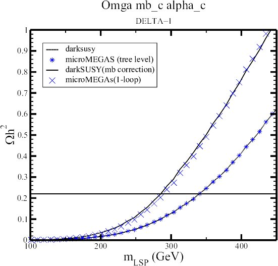
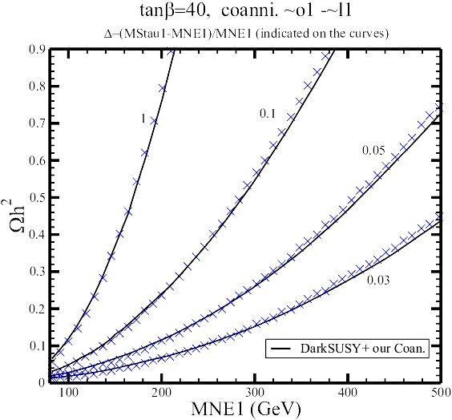

| Feedback & Comparisons (relative to micrOMEGAs_1.1 ) |
12.02.02:
As stated in the manual we have tested micrOMEGAs rather
extensively.
Most of the comparisons were done against DarkSUSY. Very good agreement
was found in the case of annihilation of the neutralino LSP (to all
possible
channels) as well as co-annihilations with neutralinos and charginos
(apart
from one particular channel to b where the problem in DarkSUSY was
identified).
PolesmicrOMEGAs gives a special attention to the treatment of poles and thresholds. Again here we agree with DarkSUSY, however we include some important loop corrections to the Higgs widths. When these are implemented the results of DarkSUSY and micrOMEGAs do not match, as expected.

from Mario GomezStau neutralino co-annihilation
These are not implemented in DarkSUSY. Private codes exist though and some analytical formulae have been given in the literature. Mario Gomez has tested this part of micrOMEGAs by combining DarkSUSY for the annihilation part and his own code for the co-annihilation part. Very good agreement is found (x are the results of micrOMEGAs).

Thanks Mario!